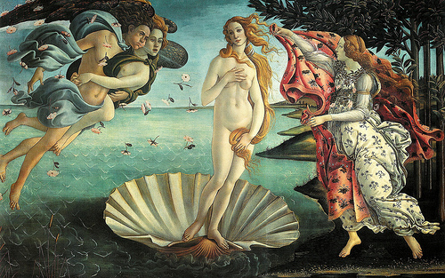
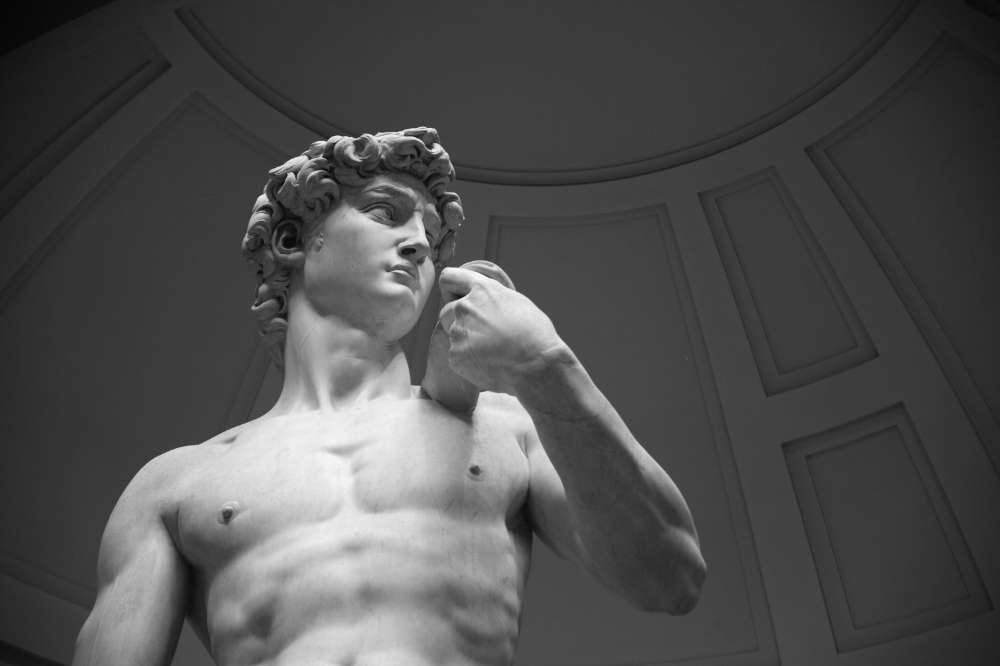
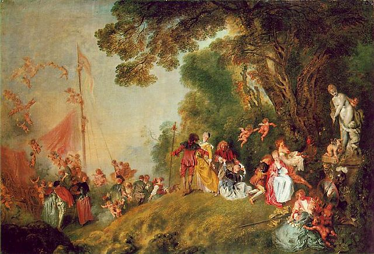
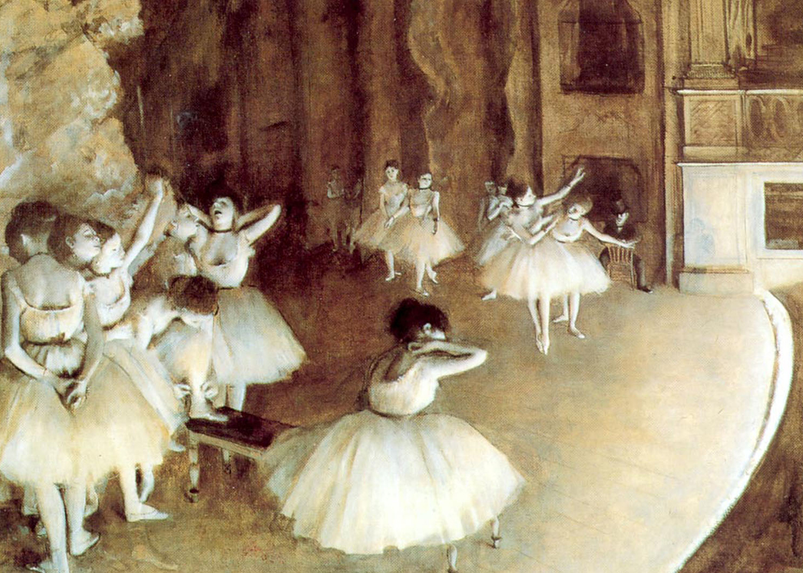
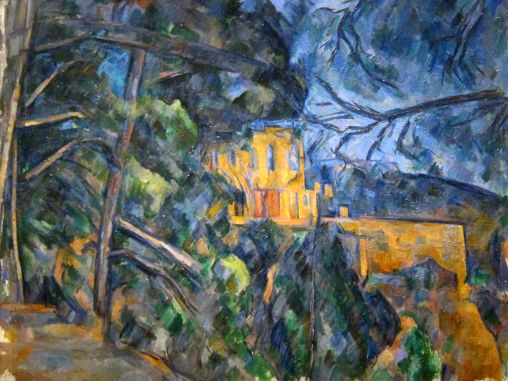
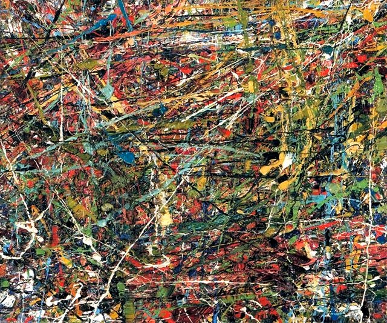
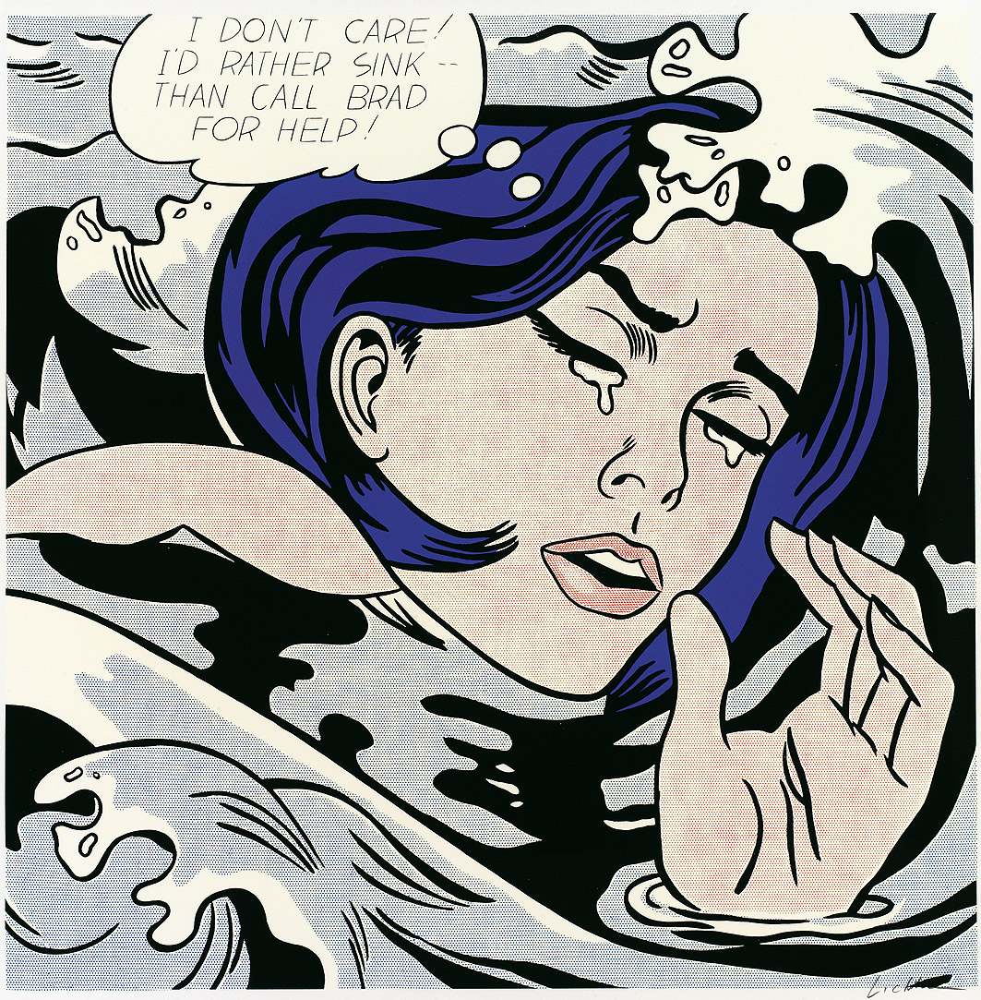

-
Gothic Art
1150-1600Gothic art is one type of Medieval art that characterized the 12th century and lasted until the start of the 17th century. The movement started in France and grew out of the rule of the Roman Catholic Church. Because many people were illiterate at the time, Gothic art and other types of Medieval art used consistent symbols and typology to convey the stories and ideas of the church. Art was almost strictly commissioned for and by the church and took the form of frescoes, sculptures, illuminated manuscripts, stained glass, and altarpieces.
-
1311
Maestà, Duccio di Buoninsegna
-
1350
stained glass detail, Troyes Cathedral
-
Renaissance
1400-1700The Renaissance, which means "rebirth," marked a new interest in classical Greak mythology and scholarship. The influence of humanism as a cultural movement is evident in the art that was created throughout the period as subject matter shifted from Biblical stories to the perfection of the human body and mind. The movement started in Italy but also flourished beyond its origin in Florence.
-
1485
Birth of Venus, Boticelli -
1486
Virgin of the Rocks
Da Vinci loved science just as much as he loved painting. Botanists say his nearly flawless depiction of the small plants at the forefront of the painting are indicative of his hours of study and research.
1504
David, MichelangeloDavid is 17 feet tall and now resides in the Galleria d'Accademia in Florence, Italy.
1517
Mona Lisa, Leonardo Da Vinci
Rococo
1715-1774Rococo art followed on the end of Baroque art which favored ornate details, order, and symmmetry. Unlike Baroque, Rococo is characterized by light pastel colors, asymmetrical design and saccharine playfulness.
1717
Pilgrimage to the Isle of Cythera, Watteau1767
The Swing, Fragonard
Realism
1830-1870Where Rococo and art prior emphasized the ideal and the comfortable, Realism demonstrated a refusal to put a facade over the life of the majority. Realism in art casts a beautiful spotlight on the commonplace.
1857
The Gleaners, Millet
Impressionism
1867-1886This French art movement marked a break from traditional methods and the start of modern art. At the time, the impressionists were criticized for not painting things as they looked. The impressionists were more concerned with depicting light, human perception and the passing of time than accuracy.
1872
Impression of a Sunrise, Claude Monet
1879
Stage Rehearsal, DegasPost-impressionism
1880-1920Post-Impressionism is formally defined as art beginning with Manet and those that followed him until the turn of the century. Post-Impressionist art is characterized by more realistic subject matter and a bolder use of color and emotion.
1882
A Bar at Folies Bergere, Eduoard Manet
1889
Burghers of Calais, Auguste Rodin
1891
Tahitian Women on the Beach, Paul Gaugin
1904
Chateau Noir, Paul CezanneAbstract Expressionism
1940-1968This movement puts emphasis on the process of creating the work almost more than the work itself. It began and flourished in post-WWII New York. The work produced in this period reflects a cultural shift toward apoliticism, nihilism and experience. The name encompasses a large number of artists who largely have their own unrelated styles. Unlike in prior periods of art, Abstract Expressionism was just as much about the artist himself as the viewer and anticipated audience.
1951
1951, Jean-Paul Riopelle1953
No. 61, Mark Rothko
Pop art
1958-1970Pop Art effectively broke the divide between high art and pop culture. The major figures of the movement worked throughout the 1960s and 70s and included Andy Warhol, Roy Lichtenstein, Claes Oldenburg, and James Rosenquist among others.
1962
Marilyn Diptych, Andy Warhol1963
Drowning Girl, Roy Lichtenstein